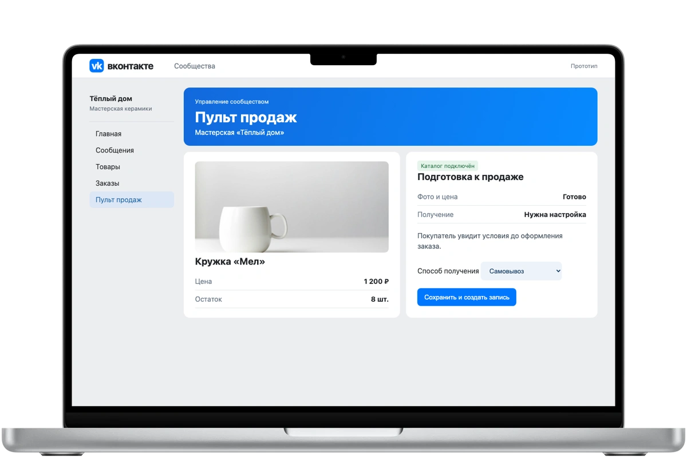
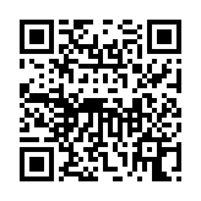
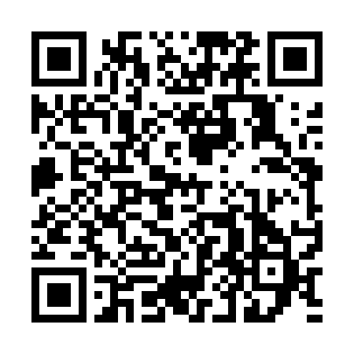
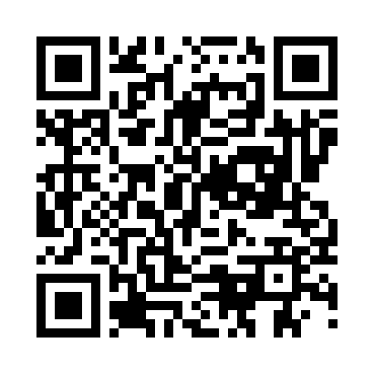

Выводы из анализа
3 961бизнес с активными товарами
Продавец уже в VK
У 493 сообществ есть товары, аудитория и просмотры товарных публикаций. За месяц заказы получили 121 из них.


Пульт продаж в кабинете сообщества
У 493 сообществ есть товары, аудитория и просмотры товарных публикаций. За месяц заказы получили 121 из них.
Пульт продаж проверяет наличие, цену и способ получения. Продавец исправляет недостающее прямо в карточке.
Покупатель открывает товар в записи. Заказ и выдача остаются в кабинете сообщества.
В Маркете покупатель находит знакомый магазин или сохранённый товар.
Оставляем бизнесы с активными товарами, затем выбираем тех, у кого есть просмотры товарного контента.
Оставляем сообщества с аудиторией свыше 1 000 и до 100 000 подписчиков.
Этим продавцам уже есть что показать аудитории. Проверим, помогает ли понятный способ получения довести интерес до покупки.
Для действующих продавцов проверим повторные покупки и время обработки заказа.
Покупатель знает, что ищет. Витрина помогает сравнить ассортимент.
Условия конкретной сделки покупатель уточняет у продавца.
Товар открывается из видео или эфира автора.
Можно показать товар подписчикам, ответить на вопрос и принять заказ в одном сообществе.
Цена и получение видны ещё до заказа. Вернуться можно к магазину, которому покупатель уже доверяет.
Считаем дополнительные заказы внутри VK и бизнесы, впервые подключившие инструменты продаж.
Проверяем возврат к сохранённому товару. Низкая доля входов с главной сама по себе не доказывает, что отдельная витрина бесполезна.


В карточке есть цена и остаток. Пульт предлагает добавить самовывоз или доставку и прикрепить товар к записи.
Из записи он открывает ту же карточку. Стоимость и получение известны до оформления.
Продавец подтверждает выдачу или отменяет заказ. Так можно отличить оформление от продажи, которая состоялась.
Накопленный денежный поток, млн ₽. Первые полгода число активных продавцов растёт до 6 000.
3,15 млн на разработку, 600 тыс. на аналитику, 450 тыс. на исследование и подключение. Инфраструктура и резерв по 300 тыс. ₽.
При 6 000 активных бизнесов каждый пятый тратит на рекламу на 1 500 ₽ больше, чем потратил бы без продукта.
65% маржи дают 1,17 млн ₽. Вычитаем 360 тыс. ₽ на поддержку и 400 тыс. ₽ постоянных расходов.
Операционный результат становится положительным при 2 963 активных бизнесах. При осторожном сценарии ежемесячный убыток составляет 325 тыс. ₽.
Разобрать сорванные заказы с продавцами. Проверить карточки и условия получения.
Связать публикацию, товар и заказ. Разделить оформления, выдачи и отмены.
50–100 бизнесов. Пройти путь от публикации до выдачи и сверить события.
Случайно назначить группы. Для каждого бизнеса выдержать полные 30 дней.
Расширяем пилот, если прирост заказов подтверждён, дополнительная маржа положительна, отмены и жалобы в согласованных пределах.
| Источник | Единица наблюдения | Для чего используем | Ограничение |
|---|---|---|---|
| Бизнесы | 9 754 бизнес-ID | Сегментация и настройки | Выборка, без истории изменений |
| Итоги | Метрика за месяц | Общая воронка | Разные поверхности и способы покупки |
| По дням | 30 дней сентября | Динамика и сверка итогов | Один покупатель может вернуться в разные дни |
| Источники | Источник открытия | Выбор точки входа | 40,2% трафика VK в «Другое» |
| Категории | Товарная категория | Различия спроса | Заказы не сходятся с итогом |
| Покупатели | Пол и возраст | Профиль видимой аудитории | Подавление малых групп |
| Регионы | Регион | География и пропуски | 36,7% покупателей партнёра без региона |
| Проверка | Наблюдение | Как учитываем |
|---|---|---|
| Заказы VK по категориям | 435 285 против 413 740 в итогах | Не складываем категории в единый итог |
| Заказы партнёра по категориям | 4 557 517 против 4 927 525 | Не используем как полную декомпозицию |
| Заказы при выключенном чекауте | 14 бизнесов | Настройки могли измениться за месяц |
| Заказы при выключенной оплате | 268 бизнесов | Различаем заказ и оплату |
| GMV партнёра по дням | На 1 ₽ меньше месячного итога | Месячный итог берём из сводного листа |
| Покупатели и регионы | Сходятся с отдельными строками видимых групп | Пропуски не заменяем нулями |
| Подписчики | Контент | Бизнесов | С заказами | Доля |
|---|---|---|---|---|
| до 1 тыс. | Нет | 1648 | 39 | 2.4% |
| до 1 тыс. | Есть | 622 | 29 | 4.7% |
| 1–10 тыс. | Нет | 1059 | 66 | 6.2% |
| 1–10 тыс. | Есть | 396 | 84 | 21.2% |
| 10–100 тыс. | Нет | 132 | 25 | 18.9% |
| 10–100 тыс. | Есть | 97 | 37 | 38.1% |
| 100 тыс.+ | Нет | 5 | 4 | 80.0% |
| 100 тыс.+ | Есть | 2 | 1 | 50.0% |
| Показатель | Значение | Интерпретация |
|---|---|---|
| Медиана заказов на бизнес | 0 | Большинство не имеет заказов |
| Бизнесы с заказами | 298 из 9 754 | 3,1% всей выборки |
| Всего заказов в листе бизнесов | 3 478 | Выборка сообществ меньше всего Маркета |
| Источник | Открытия карточек VK | Доля |
|---|---|---|
| Другое | 77 753 037 | 40.18% |
| Витрина магазина | 75 604 323 | 39.07% |
| Лента | 18 795 696 | 9.71% |
| Клипы | 17 239 066 | 8.91% |
| Поиск | 3 707 521 | 1.92% |
| Главная Маркета Вконтакте | 412 818 | 0.21% |
| Гипотеза | Основание | Следующая проверка |
|---|---|---|
| Активация продаж важнее новых подключений | Чекаут у 91,9%, заказ у 7,2% | Эксперимент на бизнесах с каталогом |
| Контент помогает довести до покупки | Разница внутри диапазонов аудитории | Контроль темы, активности и пилот |
| Настройка требует сопровождения | Разрыв подключения и продажи | Интервью и тестовая покупка |
| Маркет помогает вернуться | 0,21% входа с главной | Тест сохранений и повторных заказов |
| Продавец платит за доказанную ценность | Рекламные расходы есть в датасете | Изменение общего бюджета относительно контроля |
Каталог, активность товара, соответствие аудитории.
Условия получения, настройки, ошибки оформления.
Проверяем карточку и тестовую покупку.
Публикация, распространение, аудитория.
Цена, доверие, контекст, условия.
Проверяем события и причины отказов.
Статусы, исполнение, обратная связь.
Сохранение товара и поиск магазина.
Проверяем исполнение и повторные заказы.
| Вариант | Бюджет, допущение | Плановый срок | Риск |
|---|---|---|---|
| Привлечение новых продавцов | 3–6 млн ₽ | 8–12 недель | Стоимость продающего бизнеса |
| Широкая витрина | 6–12 млн ₽ | 12–20 недель | Недостаточный спрос и каннибализация |
| Связки с авторами | 4–8 млн ₽ | 8–12 недель | Внешнее завершение заказа |
| Пульт продаж | 4,8 млн ₽ | От 12 недель до оценки результата* | Причина низких продаж не подтверждена |
| Субсидии | 2–5 млн ₽ | 4–6 недель | Отток после прекращения скидки |
| Канал | Как находят товар | Что делает продавец | Что применимо в VK |
|---|---|---|---|
| Ozon, маркетплейс | Поиск товара и переход в магазин | Собирает ассортимент на витрине | Понятные условия и каталог для готового спроса |
| leboncoin, объявления | Поиск отдельного предложения | Размещает объявление и обсуждает условия в чате | Ответ на вопрос покупателя прямо у товара |
| TikTok Shop, соцкоммерция | Видео, эфир или витрина автора | Показывает товар в действии и связывает с карточкой | Короткий путь из контента к покупке |
| ВКонтакте, наша стратегия | Публикация сообщества, затем возврат через Маркет | Проверяет готовность товара, публикует и отслеживает заказ | Измеряем прирост заказов и долю продающих относительно контроля |
| Параметр | Осторожный | Базовый | Высокий |
|---|---|---|---|
| Подходящих бизнесов, допущение | 10 000 | 20 000 | 40 000 |
| Доля активированных | 20% | 30% | 35% |
| Доля с дополнительной рекламой | 15% | 20% | 25% |
| Дополнительный расход на рекламу / мес. | 1 000 ₽ | 1 500 ₽ | 1 800 ₽ |
| Маржа до поддержки и постоянных расходов | 65% | 65% | 65% |
| Поддержка активного бизнеса / мес. | 60 ₽ | 60 ₽ | 60 ₽ |
| Постоянные расходы / мес. | 400 тыс. ₽ | 400 тыс. ₽ | 400 тыс. ₽ |
Активные бизнесы × доля с дополнительной рекламой × дополнительный расход.
База
6 000 × 20% × 1 500 ₽ = 1,8 млн ₽ в месяц
Выручка × 65% − активные бизнесы × 60 ₽ − 400 тыс. ₽.
База
1,17 млн − 0,36 млн − 0,40 млн = 0,41 млн ₽ в месяц
Начальные вложения 4,8 млн ₽. За первые 6 месяцев активная база растёт линейно.
База
Накопленный поток становится положительным на 17-м месяце.
Рандомизация по бизнесу, 1 к 1. Стратификация по аудитории, тематике и прошлым заказам.
Анализ по назначению в группу.
База 24,54%, эффект +5 п.п., мощность 80%, двусторонний α = 5%.
Полное окно 30 дней. Проверка отмен, жалоб, поддержки и общего рекламного бюджета.
Проверка числа заказов требует большего объёма. Расчёт на с. 26.
| Риск | Ранний сигнал | Действие |
|---|---|---|
| Нет реального спроса | Карточку открывают, заказов нет | Интервью и тест предложения до расширения |
| Перенос старых заказов | Новый путь растёт, общий объём стоит | Общая метрика бизнеса относительно контроля |
| Перегрузка продавца | Долгая настройка и отказы | Один следующий шаг, измерение времени |
| Ухудшение ленты | Больше скрытий и жалоб | Ограничение частоты и качества контента |
| Дорогая поддержка | Стоимость на активный бизнес выше модели | Самостоятельный путь, отдельные тарифные сценарии |
| Ошибки атрибуции | Не сходятся ID и статусы | Проверка событий до продуктового теста |

Исходники презентации, описание пилота и экономика.

Семь листов исходной книги, сегменты и денежный поток.

Скачать проект и открыть demo/index.html в браузере.
VK: результаты за девять месяцев · TikTok Shop · Витрина Ozon · VK Education: Магазин ВКонтакте

Кадр консультации, 10:00. Действующая точка входа продавца в инструменты VK.
Сравниваем заказы на назначенный бизнес за 30 дней. Умножаем разницу средних на число бизнесов теста для оценки дополнительных заказов.
Цель +5 п.п. к доле бизнесов с заказом. Отдельно считаем бизнесы, впервые подключившие инструменты.
Отмены, исполнение и обращения в поддержку. Оплата внутри VK покрывает лишь часть заказов.
Цена, остаток, получение. Единый идентификатор товара.
Ссылка на карточку сохраняет идентификатор публикации.
Связь с продавцом, товаром и публикацией. Повтор запроса не создаёт второй заказ.
Подтверждение, отмена или выдача. История изменений статуса.
Показывает сохранённые товары и знакомые сообщества. Перед показом цены и наличия читает актуальную карточку.
Связывает открытие, оформление и выдачу по ID. Повторные события удаляются по идентификатору операции.
Закрепляет группу за бизнесом. Заказы считаются по всем поверхностям, чтобы заметить перенос из старых каналов.
Медиана равна нулю, стандартное отклонение 18,49. На среднее заметно влияют крупные продавцы.
37 334 бизнесов
9 334 бизнесов
4 149 бизнесов
Согласовать минимальный экономически значимый прирост. Повторить расчёт по данным за несколько месяцев, с учётом выбывания и связей между магазинами.
Сравнить группы по назначению. Интервал оценить по бизнесам, отдельно проверить влияние крупных магазинов.
| Инструмент | Что получает продавец | Что проверяет VK | Как проверить |
|---|---|---|---|
| Проверка карточки | Меньше вопросов о наличии и получении | Больше магазинов с работающим оформлением | Доля впервые подключивших инструмент |
| Товарная метка в записи | Покупатель видит конкретный товар в момент интереса | Больше заказов из контента | Заказы на назначенный бизнес за 30 дней |
| Сообщения и статусы | Продавец видит вопрос или отмену и может связаться с клиентом | Больше выданных заказов, меньше жалоб | Выдачи и отмены на 100 оформлений |
| Сохранённые товары в Маркете | Повторный контакт с прежним покупателем | Рост повторных заказов внутри VK | Доля покупателей с повторным заказом за 30 дней |
| Продвижение готовой записи | Рекламный бюджет направляется на доступный товар | Дополнительная рекламная выручка | Изменение общих расходов относительно контроля |


Москва · VK Case Champ 2026